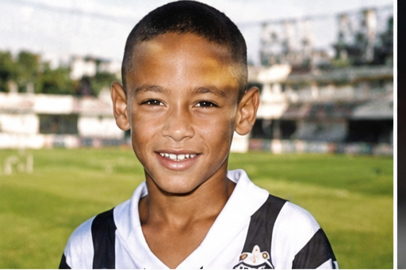
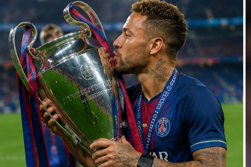
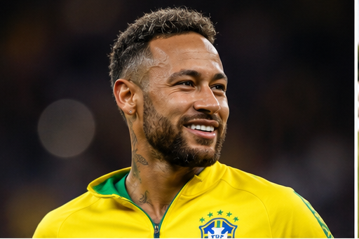
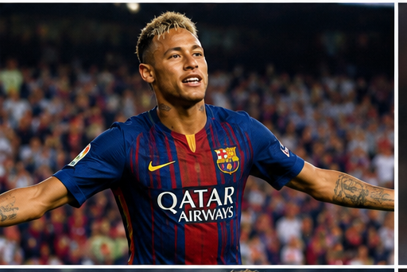
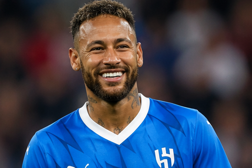

Neymar Jr. is one of the most gifted and entertaining footballers of his generation. Famous for his dazzling dribbling, incredible flair, creativity, and spectacular goals, the Brazilian superstar has thrilled fans around the world. From his early success at Santos to starring for Barcelona, Paris Saint-Germain, and Brazil, Neymar has built a remarkable career filled with unforgettable moments.

Neymar da Silva Santos Júnior was born on 5 February 1992 in Mogi das Cruzes, São Paulo, Brazil. He developed a passion for football from an early age, inspired by his father, a former footballer. Growing up playing street football and futsal helped Neymar develop his exceptional ball control, creativity, and technical skills that would later make him one of the world's best players.

Neymar joined Santos FC's youth academy at the age of 11. His extraordinary talent quickly attracted attention from scouts around the world. He progressed rapidly through the academy and became one of Brazil's brightest young prospects, earning comparisons with legendary Brazilian players.

Neymar made his professional debut for Santos in 2009 at just 17 years old. His remarkable dribbling, flair, and goal-scoring ability immediately made him one of South America's biggest stars. During his time at Santos, he helped the club win the Copa Libertadores in 2011, their first continental title in nearly five decades.

In 2013, Neymar joined FC Barcelona, forming the legendary attacking trio of Messi, Suárez, and Neymar. Together they won the historic continental treble in 2015, including the UEFA Champions League. In 2017, he moved to Paris Saint-Germain in a world-record transfer, where he won multiple Ligue 1 titles and became one of the club's leading scorers. Later in his career, Neymar continued playing at the highest level while remaining one of football's most recognizable stars.

Neymar has represented Brazil since 2010 and has been one of the country's most important players. He won the Olympic gold medal at the Rio 2016 Olympic Games, the FIFA Confederations Cup in 2013, and became Brazil's all-time leading men's international goal scorer. His creativity, leadership, and attacking brilliance have made him one of Brazil's greatest footballers.
Neymar is renowned for his exceptional dribbling, quick feet, creativity, vision, and flair. Comfortable playing as a winger, attacking midfielder, or forward, he combines technical brilliance with excellent finishing and precise passing. His entertaining style of play and ability to beat defenders make him one of the most exciting players to watch.
Neymar is regarded as one of the greatest Brazilian footballers of the modern era. His spectacular skills, creativity, and joyful style of play have inspired millions of fans and young footballers worldwide. Whether dazzling defenders, creating goals, or scoring spectacular finishes, Neymar has left a lasting mark on the beautiful game.
"The secret is to believe in your dreams; in your potential that you can be like your star, keep searching, keep believing, and don't lose faith in yourself." — Neymar Jr.